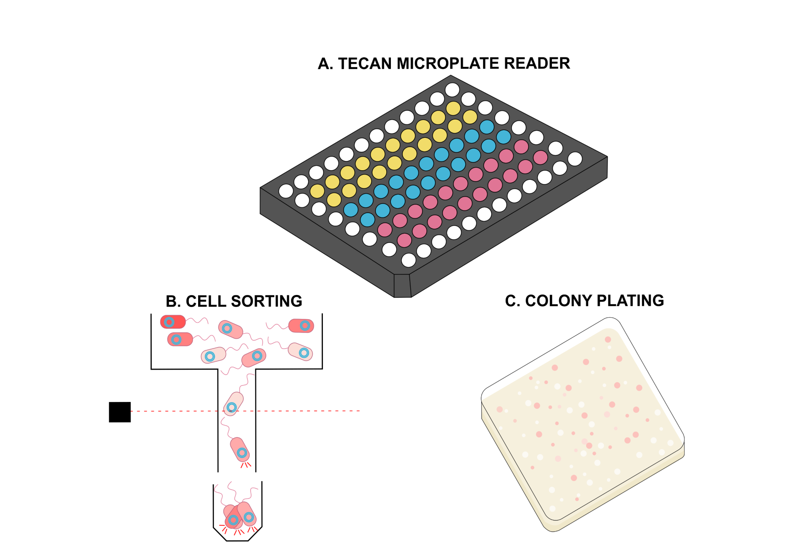

VARIANT LIBRARY GENERATION
In order to generate a library of variants for our target proteins, firstly the primers for the PCR step were designed to include mutations for the key residues that emerged to be involved in the active site of the enzymes from the dry lab analysis. Gibson assembly was then done to reconstitute the full library, with a fluorescent reporter in the backbone.

SCREENING
The generated variant library was transformed into competent E.coli cells and plated onto agar plates containing antibiotics for selection as well as non-cognate AHLs for inducing fluorescence. The library was also subjected to FACS analysis where cells that fluoresced above a gating threshold were sorted into individual wells of a 96 well plate and characterised under different AHL conditions (cognate and non-cognate) using a TECAN microplate reader.
